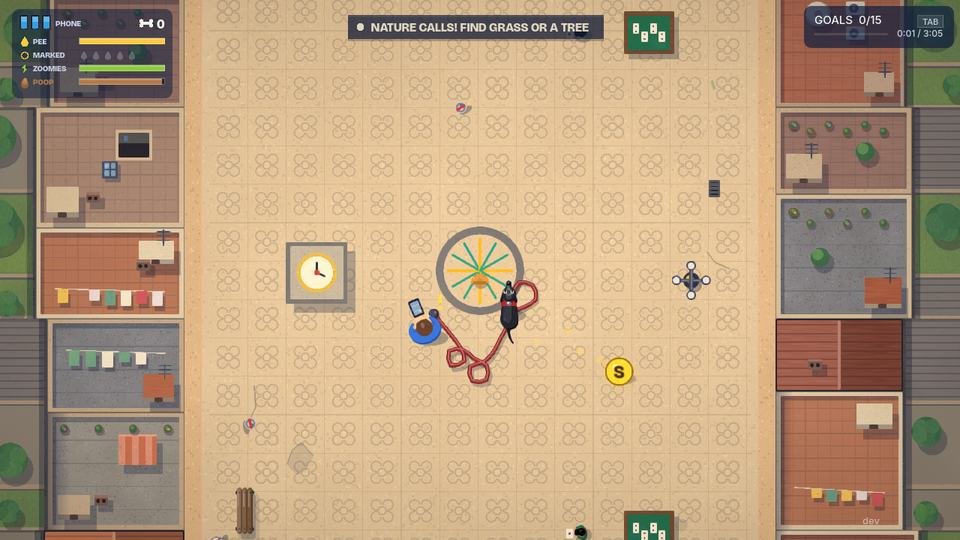
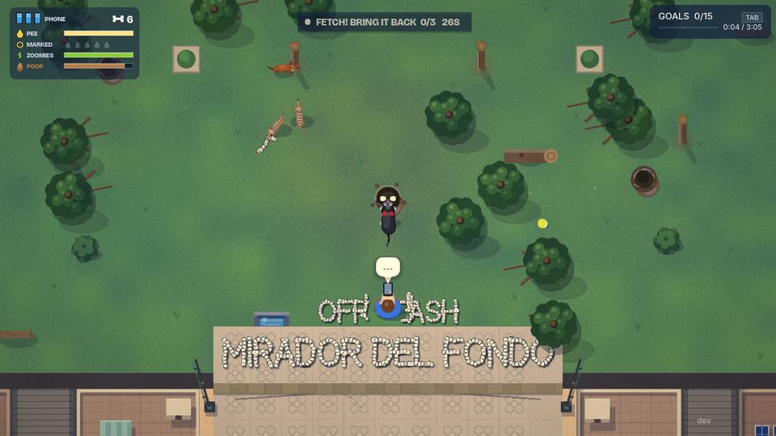

Steep market, spices & dominoes
A steep climb up from the Besòs bridgehead into Santa Coloma past Mercat del Fondo's spice sacks and striped barber poles, laundry flapping above balconies, to the tiled clock square and domino elders of Plaça del Rellotge before finishing at Mirador del Fondo.

